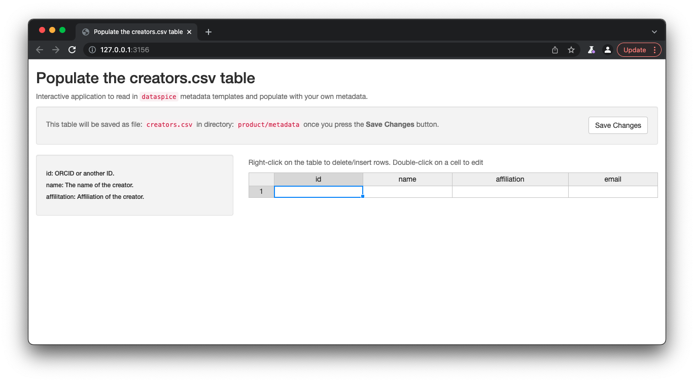
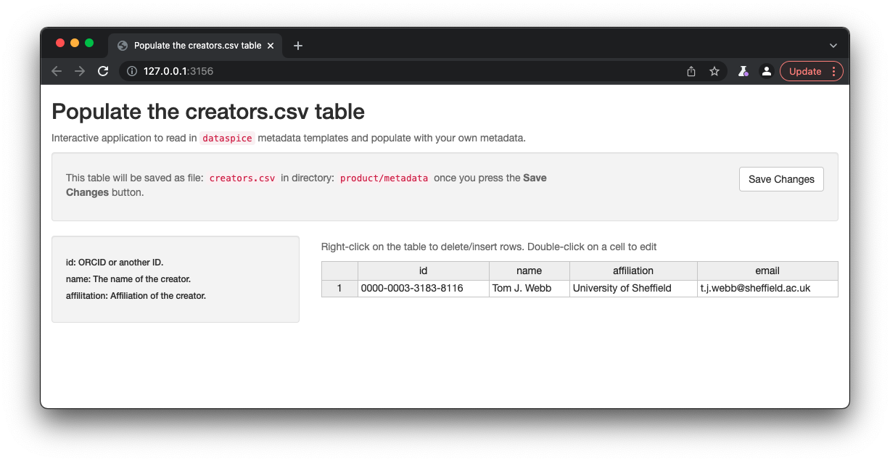
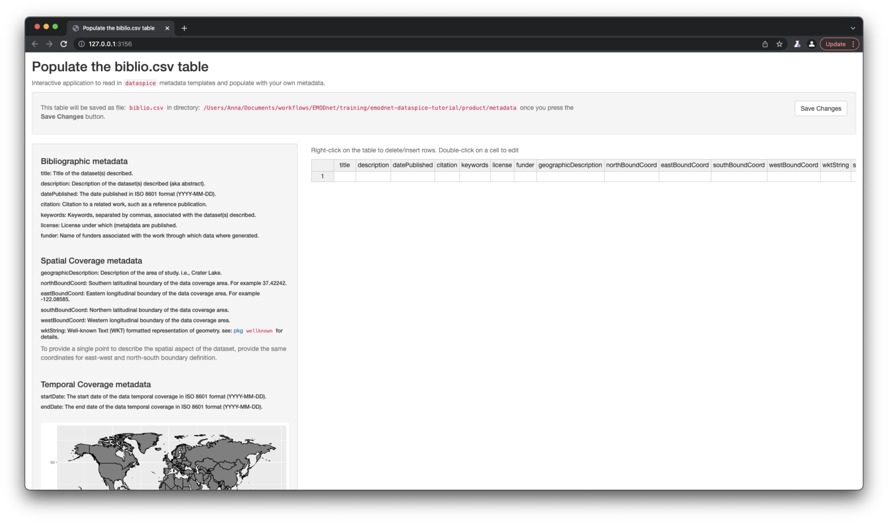
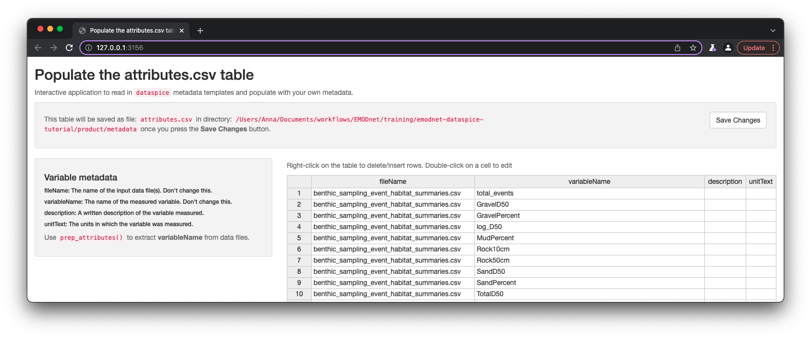
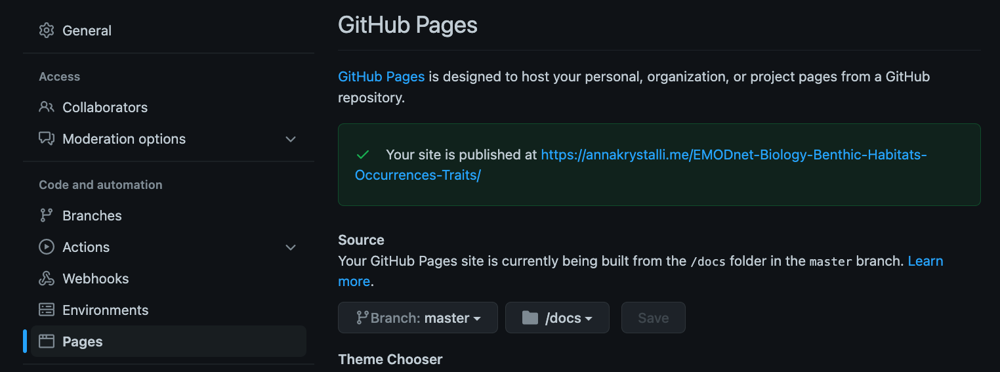
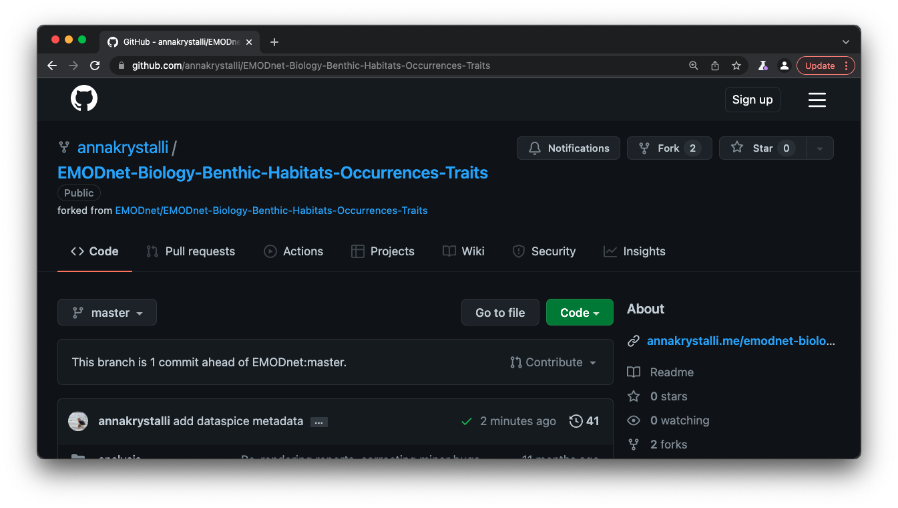

Overview
The goal of this tutorial is to provide a practical exercise in creating metadata for an example field collected data product using package dataspice.
Understand basic metadata and why it is important.
Understand where and how to store them.
Understand how they can feed into more complex metadata objects.
Preliminaries
Software Requirements
To follow this tutorial, you will need to have a recent version of R and ideally RStudio Desktop installed.
You will also need to install package dataspice as well as a few additional helper packages.
install.packages(c("dataspice", "here", "jsonlite", "listviewer"))Tutorial Materials
You will also need to fork (make a copy of) and clone (download your fork) the example Data Product EMODnet/EMODnet-Biology-Benthic-Habitats-Occurrences-Traits I will be working with in this tutorial.
Introduction
dataspice workflow

Example materials
The example Data Product I’m working with is EMODnet/EMODnet-Biology-Benthic-Habitats-Occurrences-Traits and has the following structure:
├── EMODnet_occs_habs.Rproj
├── README.html
├── README.md
├── analysis
│ ├── benthic data habitat matching.Rmd
│ ├── benthic species habitat dashboards.Rmd
│ └── species and traits.Rmd
├── data
│ ├── derived_data
│ └── raw_data
├── docs
│ ├── benthic-data-habitat-matching.html
│ ├── benthic-data-habitat-matching.pdf
│ ├── benthic-species-habitat-dashboards.html
│ ├── benthic-species-habitat-dashboards.pdf
│ ├── species-and-traits.html
│ └── species-and-traits.pdf
├── product
│ ├── benthic_sampling_event_habitat_summaries.csv
│ ├── benthic_specicies_habitat_summaries.csv
│ └── species_hab_plots
└── scripts
├── biotic traits data.R
├── get_event_habitats.R
├── get_species_habitats.R
├── get_worms_fgrp.R
└── plot_species_habitats.RGenerally, it is not necessary to document raw or intermediate data files. It is important to document any outputs or analytical data produced.
We therefore focus on the contents of the product/ directory.
In particular, we will document the following two files:
benthic_sampling_event_habitat_summaries.csvbenthic_specicies_habitat_summaries.csv
Create dataspice metadata files
We’ll start by creating the basic metadata .csv files in which to collect metadata related to our example dataset using function dataspice::create_spice().
The default behaviour of the function (called without providing a dir argument), would create a metadata directory in the data directory in the root of a project.
However, because I want to document the files in the product directory, I override the default write out location by providing a dir argument.
dataspice::create_spice(dir = "product")This creates a metadata directory in the project’s product directory containing 4 .csv files in which to record metadata.
product
├── benthic_sampling_event_habitat_summaries.csv
├── benthic_specicies_habitat_summaries.csv
├── metadata
│ ├── access.csv
│ ├── attributes.csv
│ ├── biblio.csv
│ ├── creators.csv
│ └── dataspice.json
└── species_hab_plots
├── Aphia103228_habitat_plot.pdf
└── Aphia141433_habitat_plot.pdf- access.csv: record details about where your data can be accessed.
- attributes.csv: record details about the variables in your data.
- biblio.csv: record dataset level metadata like title, description, licence and spatial and temoral coverage.
- creators.csv: record creator details.
Record metadata
creators.csv
The
creators.csvcontains details of the dataset creators.
Fields to collect:
- id: ORCID or another ID.
- name: The name of the creator.
- affilitation: Affiliation of the creator.
- email: Email of the creator.
Let’s start with a quick and easy file to complete, the creators. We can open and edit the file in an interactive shiny app using dataspice::edit_creators().
The default behaviour of the function (called without providing a metadata_dir argument) will look for a creators.csv file in the data/ directory. However, because we want to override this behaviour, we provide an explicit path for the metadata directory.
metadata_dir <- here::here("product", "metadata")dataspice::edit_creators(metadata_dir = metadata_dir)
Once details are complete, remember to click on Save to save the changes to the creators.csv.

access.csv
The
access.csvcontains details about where the data can be accessed.
Fields to collect:
- fileName: The filename of the input data file(s).
- name: A human readable name for the file.
- contentUrl: A url to where the data is hosted, if applicable.
Before manually completing any details in the access.csv, we can use dataspice’s dedicated function prep_access() to extract relevant information from the data files themselves.
dataspice::prep_access(data_path = "product", access_path = "product/metadata/access.csv")The following fileNames have been added to the access file: benthic_sampling_event_habitat_summaries.csv, benthic_specicies_habitat_summaries.csvNext, we can use function edit_access() to view and edit the contents of access.csv.
dataspice::edit_access(metadata_dir)Remember to click on Save when you’re done editing.
Otherwise, as the files are just csvs, you can edit them in your favourite editor instead.
biblio.csv
The
biblio.csvcontains dataset level metadata like title, description, licence and spatial and temporal coverage.
Fields to collect:
Bibliographic metadata
- title: Title of the dataset(s) described.
- description: Description of the dataset(s), e.g. the abstract.
- datePublished: The date published in ISO 8601 format”(YYYY-MM-DD).
- citation: Citation to a related work, such as a reference publication.
- keywords: Keywords, separated by commas, associated with the dataset(s) described.
- license: License under which (meta)data are published. Should be CC-BY 4.0 according to EMODnet policy.
- funder: Name of funders associated with the work through which data where generated.
Spatial Coverage metadata
- geographicDescription: Description of the area of study, i.e., Crater Lake.
- northBoundCoord: Southern latitudinal boundary of the data coverage area. For example 37.42242.
- eastBoundCoord: Eastern longitudinal boundary of the data coverage area. For example -122.08585.
- southBoundCoord: Northern latitudinal boundary of the data coverage area.
- westBoundCoord: Western longitudinal boundary of the data coverage area.
- wktString: Well-known Text (WKT) formatted representation of geometry. see: pkg
wellknownfor details.
To provide a single point to describe the spatial aspect of the dataset, provide the same coordinates for east-west and north-south boundary definition.
Temporal Coverage metadata
- startDate: The start date of the data temporal coverage in ISO 8601 format (YYYY-MM-DD).
- endDate: The end date of the data temporal coverage in ISO 8601 format (YYYY-MM-DD).
Before we start filling this table in, we can use some base R functions to extract some of the information we require from the data itself. In particular we can use function range() to extract the temporal and spatial extents of our data from columns containing temporal and spatial data.
Such information is contained in benthic_abundance_sampling_events_seabed_habs.csv in the data/derived_data directory.
Get temporal extent
Although dates are stored as a text string, because they are in ISO format (YYYY-MM-DD), sorting them results in correct chronological ordering. If your temporal data is not in ISO format, consider converting them (see package lubridate)
range(sampling_events$datecollected, na.rm = TRUE) [1] "1980-03-17T00:00:00Z" "2018-07-04T00:00:00Z"Get geographical extent
The lat/lon coordinates are in decimal degrees which again are easy to sort or calculate the range in each dimension.
South/North boundaries
range(sampling_events$decimallatitude)[1] 43.34082 73.63362West/East boundaries
range(sampling_events$decimallongitude)[1] -9.39937 35.22617NB: you can also supply the geographic boundaries of your data as a single well-known text string in field wktString instead of supplying the four boundary coordinates.
Now that we’ve got the values for our temporal and spatial extents, we can complete the rest of the fields in the biblio.csv file using function dataspice::edit_biblio().
A lot of the rest of the information, I’ve taken from the data product metadata page on the data catalogue. Ideally, the workflow would work the other way around, i.e. the data is collected by the data product producer and is then much more easily ingested into the data catalogue.
dataspice::edit_biblio(metadata_dir)
attributes.csv
The
attributes.csvcontains details about the variables in your data. This is critical metadata to ensure data is understood and used correctly.
Fields to collect:
- fileName: The name of the data file(s) the variable is found in.
- variableName: The name of the measured variable.
- description: A written description of the variable measured.
- unitText: The units in which the variable was measured.
Again, dataspice provides functionality to populate the attributes.csv by extracting the variable names from our data file using function dataspice::prep_attributes().
The functions is vectorised and maps over each .csv file in our product/ folder and populates the fileName and variableName columns.
dataspice::prep_attributes(data_path = "product",
attributes_path = file.path(metadata_dir, "attributes.csv"))
All column names in benthic_sampling_event_habitat_summaries.csv - benthic_specicies_habitat_summaries.csv have been successfully extracted into the variableName column of attributes.csv.
Now, we can complete the description and unitText fields using
dataspice::edit_attributes(metadata_dir)Note: Because this is just a demo and I am not an expert in the data, the description is just a more readable version of each variable name and there are no units. This points to the importance of such metadata being produced by someone who is knowledgeable about the data, in order to ensure accuracy of descriptions.
Create metadata json-ld file
Now that all our metadata files are complete, we can compile it all into a structured dataspice.json file in our product/metadata/ folder.
dataspice::write_spice(metadata_dir)This function takes all the information collected in the csv files and compiles it into a json-ld, whose structure is compliant with schema.org dataset metadata standard.
Publishing this file on the web means it will be indexed by Google Datasets search! 😃 👍
Making use of the metadata in dataspice.json
Generating the dataspice.json file means we now have all our metadata in a standardised, interoperable, machine readable format allowing to build further automation from it.
Reading into R
We can for example, load it into R and review it:
dataspice_lst <- jsonlite::read_json(file.path(metadata_dir, "dataspice.json"))
listviewer::jsonedit(dataspice_lst)Presenting metadata in Rmarkdown
We could also have a standard markdown snippet the extracts metadata from the dataspice.json file and include it in a README.Rmd.
For example, the following snippet in an Rmd document:
### `r dataspice_lst$name`
##### Creator: `r dataspice_lst$creator[[1]]$name`
#### Data Product Description:
`r dataspice_lst$description`would render to the following in the html/md version:
Benthic occurrences, habitat maps, and species traits
Creator: Tom J. Webb
Data Product Description:
This data product links occurrences of benthic invertebrates from the EMODnet benthic numerical abundance product to two complementary seabed habitat products: the EMODnet broadscale habitat map 2019 (Vasquez et al., 2020), and Wilson et al.’s (2018) synthetic map of the north-west European Shelf sedimentary environment. We also process and incorporate qualitative information on the habitat and sediment preferences of species from the Biological Traits Information Catalogue BIOTIC database.
Build README site
Finally, we can use the dataspice.json file we just created to produce an informative README web page to include with our dataset for humans to enjoy! 🤩
We use function dataspice::build_site() which creates file index.html in the docs/ folder of your project (which it creates if it doesn’t already exist).
dataspice::build_site(path = file.path(metadata_dir, "dataspice.json"))Enable GitHub Pages to serve the metadata webpage
In the repository Settings page, select the Pages tab on left hand navigation panel.
To enable GitHub pages, select the branch (master) and folder (docs/) containing the content to be served:

It’s useful practice to add the url on the front matter of the repository:

View the resulting served index.html file online
Here’s a screen shot!
Completed metadata files
See the whole repository